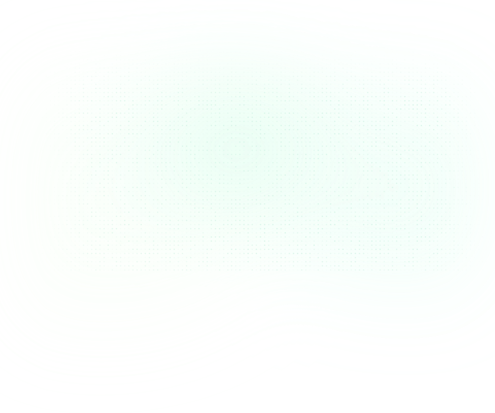
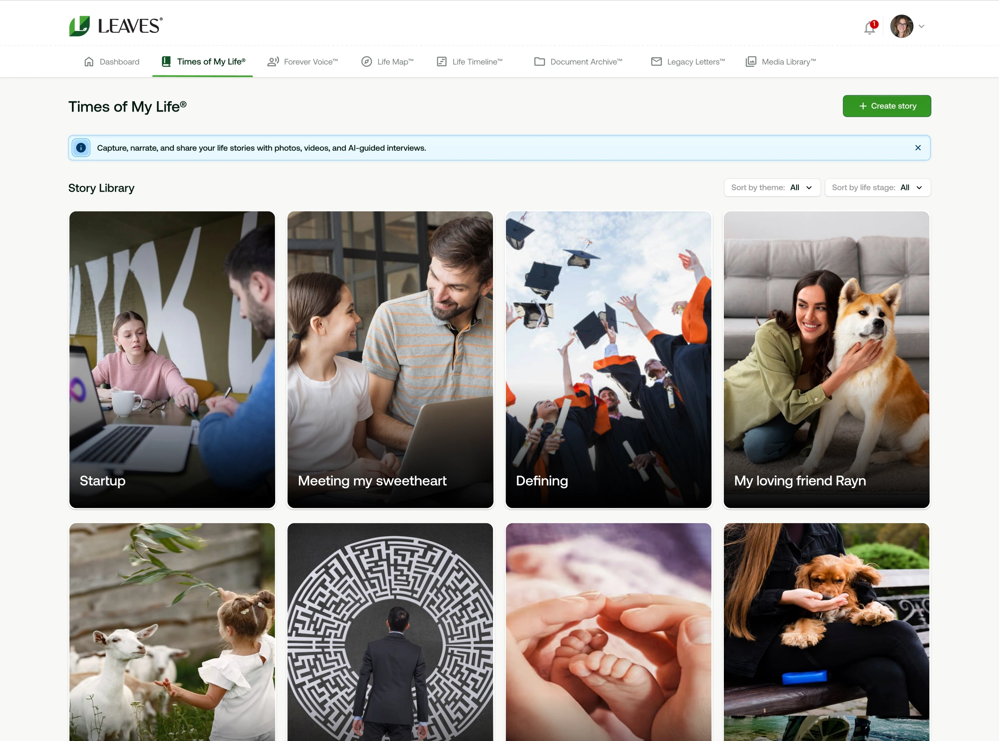
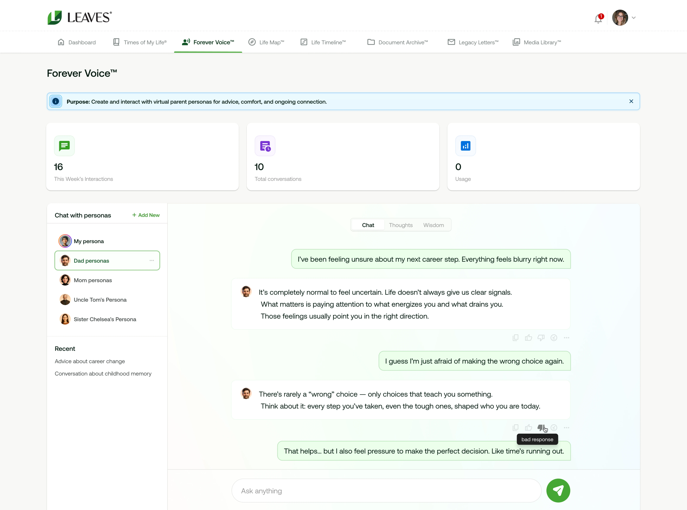
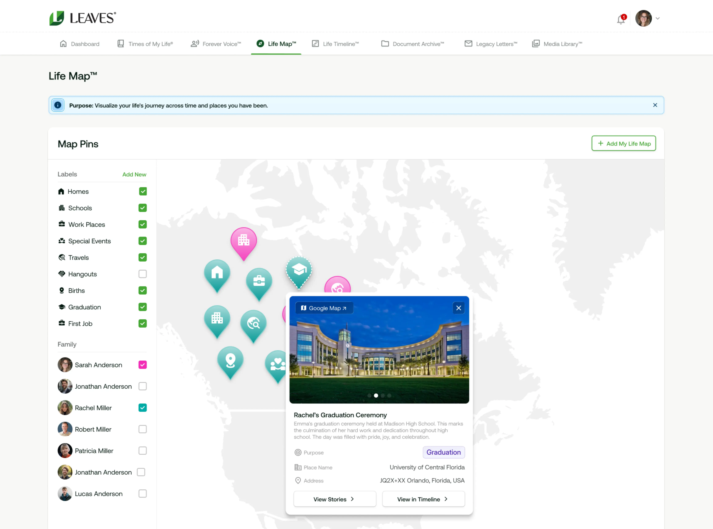
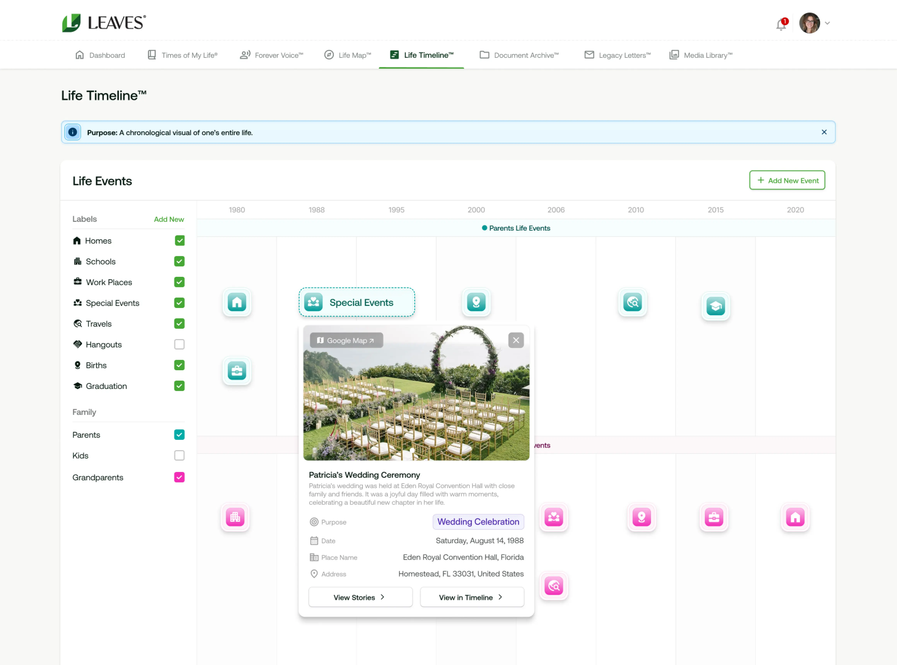
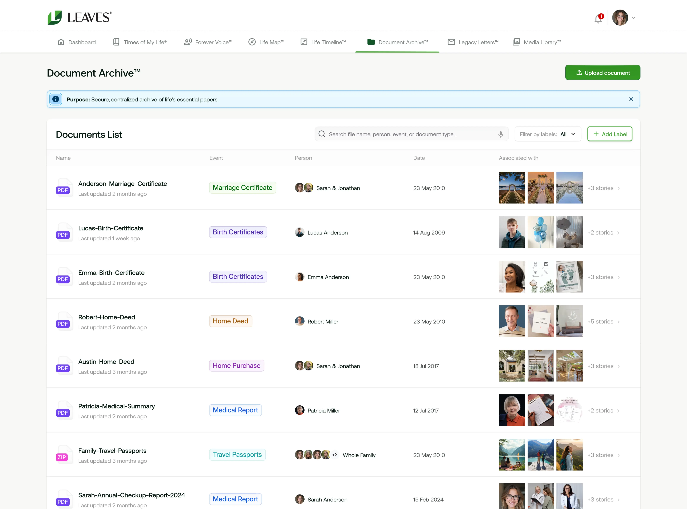
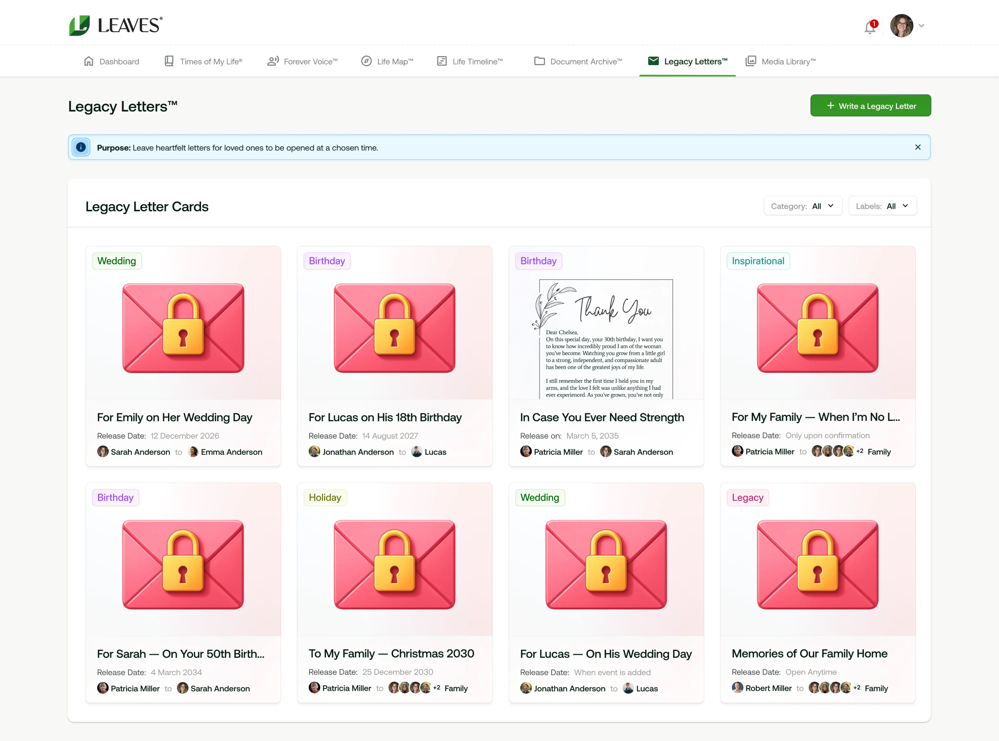
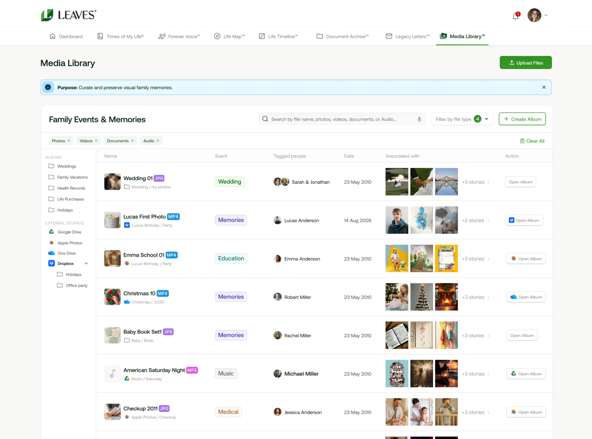
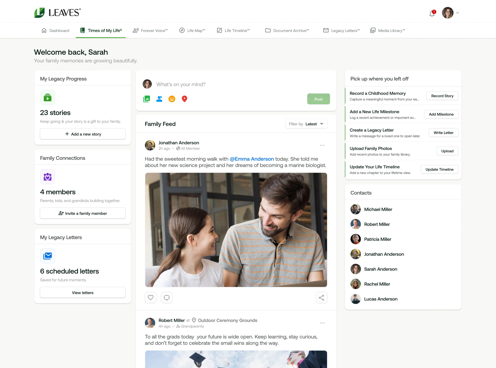

Share Memories • Preserve Stories • Connect Generations
"A private, secure digital ecosystem where families connect, capture life stories, preserve voices, and build a living multi-generational legacy."
Times of My Life™
Capture, narrate, and share your life stories with photos, videos, and music, using AI-guided interviews.
Times of My Life is Leaves’ flagship application. Family members can capture their life stories from birth to present day, or just focus on the special events, milestones, and defining moments in their lives. The app features a Virtual Biographer® that both interviews the members and writes the story in whatever tone and style are desired. The app includes a multimedia production studio for publishing the stories in print, audiocast, and video formats.
The app is currently available

Forever Voice™
Create and interact with virtual family member personas, for advice, comfort, and ongoing connection. Biology ends, yet biography continues.
Forever Voice™ is an application for creating a virtual persona that family members can talk to anytime. A virtual persona embodies one’s personality, values, philosophies, and life lessons. Future generations can ask the persona about their lives and experiences. They can also ask for advice and suggestions. It’s a way of keeping our ancestors always present in our lives and better understanding who we are and where we came from.
Forever Voice is currently a functional prototype being tested by families under NDA. Ask for access if interested. The app will launch publicly in January 2026.

Life Map™
Visualize your life’s journey across time and the places you have been.
Life Map™ is an application that visually displays where family members have lived, attended school, worked, traveled, and experienced the big events in their lives. For example, if you ever want to know where your father grew up, you can tap the pin on his Life Map and zoom in on the house. Same for your schools, offices, and places traveled. Each place on the map displays a card describing the place and why you (or a family member) were there. You can then tap to read the full story.
Life Map is currently a functional prototype being tested by families under NDA. Ask for access if interested. The app will launch publicly in February 2026.

Life Timeline™
A chronological visual of one’s entire life and major milestones.
Life Timeline™ is an application that visually displays every family member’s journey, from birth to death. Tapping on a year displays what happened that year, e.g., born, entered high school, attended college, started first job, got married, had their first child, etc. Each pin on the timeline displays a card describing the place and what you (or a family member) were doing. You can then tap to read the full story.
Life Timeline is currently a functional prototype being tested by families under NDA. Ask for access if interested. The app will launch publicly in February 2026.

Document Archive™
Secure, centralized archive of a family’s essential papers.
Document Archive™ is an application to securely store, share, and retrieve important family documents, including birth certificates, diplomas, marriage licenses, military papers, death certificates, cards, letters, and so forth. Each document is tagged with the date and place so that family members can tap to see where, when, and how this record was created, by connecting it to the user’s map, timeline, and story.
Document Archive is currently a functional prototype being tested by families under NDA. Ask for access if interested. The app will launch publicly in April 2026.

Legacy Letters™
Heartfelt letters for loved ones to be opened at a chosen date or event in the future.
Legacy Letters™ is an application to write personal messages to family members to be opened on a date or event in the future. The family members who have been sent letters are given an encryption key. The key can only be used to open the letter on the pre-subscribed date. For example, a grandmother can write a letter to her grandson that can only be opened on his 30th birthday. A parent can write a letter to his daughter that can only be opened upon the parent’s death.
Legacy Letters is currently a functional prototype being tested by families under NDA. Ask for access if interested. The app will launch publicly in June 2026.

Media Library™
Curate, store and preserve photos and videos of all family members in one place, for easy retrieval and use.
Media Library™ is a central repository for all of the family’s media – photos, videos, audio recordings, and other media. AI filters will make it easy for any family member to find any media related to any other family member and their respective life events. When a family member writes a story with Times of My Life, or adds a record to their Life Map or Life Timeline, the media they want to help “show and tell” the story can quickly and easily be inserted from here. Features will include removal of dupes, enhancing blurry photos, animating photos (bringing the characters to life), and tagging the people in the photos.
Media Library is currently in development. Ask for access to test the functional prototype when it becomes available. The goal is to publicly launch it in Q4 2026.

Family hub Dashboard
Family Feed, Real-Time Chat, Events, Occasions, and Integration with third party apps.
As a family hub, there is no limit to the feature and capabilities that might be added. Standard features like those people are accustomed to on their social media platforms will be available, including an activity/status feed, chat, and events. We plan to offer an SDK to third-party developers so they can integrate their apps with the hub and also create all-new apps for families. Each member will decide which apps they will opt into and what data they will share with these third party apps.

A live stream on the home page, featuring family member's status updates, stories, photos, and videos.
Live text and video communication with other family members.
Invitations, details, and notifications about family events like holidays, weddings, graduations, etc.
Send personalized, animated gift cards, to family members on holidays and special occasions.
Seamless access to other family heritage apps.
FAQs
Families that want to stay connected across time and geographies, capture and share life's special moments with each other, and preserve their family's collective legacies.
Families benefit from a private, ad-free space to share memories, preserve stories, and keep generations connected in one trusted hub.
Pricing will be simple and transparent with a free tier for getting started and optional plans for advanced features and storage.
Your family’s data belongs to your family. The hub is private, secure, and ad-free. We prioritize encryption, user control, and transparent data policies.
Any family member can be invited. Admins manage membership, permissions, and settings to keep the hub organized and safe.
Family members are those who have been invited to join your family hub. Non-family members can join, but they won’t have access to your family’s data. One person can join multiple hubs, but each hub is private to its members.